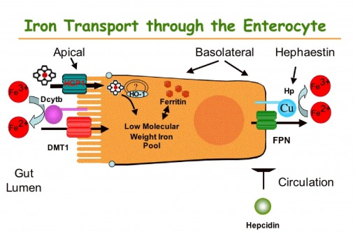

Jern
Tilbake til artikkelserien om næringsstoffene
Jern har atomnummer 26, symbolet Fe, og er et av de aller mest utbredte elementene i jordskorpen etter oksygen, silikon og aluminium. Mineralet er et essensielt element som er involvert i en rekke prosesser, deriblant energimetabolismen, nervesystemet, antoksidantforsvaret og syntese av bindevev og hormoner. Mesteparten av jernet brukes til å danne hemoglobin som er det oksygenbærende molekylet i røde blodceller.
Jern kan oksideres, og oksidasjonsstatusen kan være alt fra -2 til +6. De mest relevante for oss rent biologisk er Fe2+ (ferrous) og Fe3+ (ferric), og jern konverteres lett mellom disse formene. Dette er viktig for hvordan jernet metaboliseres i kroppen. I maten vi spiser finner vi jern som Fe2+, Fe3+ og hemjern.
Normalt sett har vi 2-6g jern i kroppen, hvorav ca 70% befinner seg i de røde blodcellene som bestanddel i det oksygenbindende proteinet hemoglobin og ca 10% i muskelcellenes oksygenlagrende protein myoglobin. Resten er hovedsakelig lagret, enten i leveren, i tarmcellene eller i makrofager, men vi finner også litt jern i jernavhengige enzymer og i sirkulasjonen.
Opptak og metabolisme
De tre ulike formene for jern tas opp til tarmcellene via ulike mekanismer og i ulike deler av tarmen. Hemjern tas opp via en ukjent hem-reseptor. Inne i tarmcellene brytes hemgruppen ned ved hjelp av enzymet Heme Oxygenase, og jernet frigis som Fe2+. Ionisk jern må være i form av Fe2+ for at transport inn i tarmcellene skal være mulig. Fe3+ blir derfor konvertert til Fe2+ ved hjelp av en membranbundet ferrireduktase, duodenal cytocrom b (Dcytb). Dette proteinet bruker C-vitamin som elektrondonor (reduserer jernet til Fe2+), og dette er en måte C-vitamin kan øke jernopptaket. Fe2+ tas opp i tarmcellene gjennom et transportprotein, divalent metall transporter 1, DMT1. Ionisk jern er mest løselig ved lav pH, så opptaket av disse er størst øverst i tarmen før bukspyttet får nøytralisert mageinnholdet. Hemjern er derimot mest løselig ved nøytral/basisk pH, og absorberes derfor best lenger nede i tynntarmen, i jejunum eller ileum.
Inne i tarmcellene kan Fe2+ binde til proteinet ferritin, og på denne måten holdes tilbake i cellen. Når Fe2+ skal transporteres over i blodet, transporteres det gjennom et transportprotein som heter Ferroportin. Når Fe2+ kommer over i blodet, må det oksideres til Fe3+ for å kunne binde til transportproteinet Transferrin, som frakter Fe3+ til leveren. Denne oksideringen skjer enten ved hjelp av det kobberavhengige membranproteinet Hephaestin eller sirkulerende ceruloplasmin som er en annet kobberavhengig oksidase. Hephaestin/ceruloplasmin og Dcytb utfører altså samme oppgave, bare motsatt vei av hverandre. Disse proteinene er viktig fordi bare Fe2+ kan krysse cellemenbranene, mens Fe3+ er den formen som transporteres i blodet.

I leveren binder jern til ferritin for å lagres. Ved kronisk høyt jernopptak eller inflammasjon vil en del ferritin degraderes ufullstendig og det produseres et nytt lagerprotein som heter hemosiderin. Jernet som binder til hemosiderin er ikke lett tilgjengelig, men kan likevel gi oksidative skader. Fra leveren til målcellene fraktes Fe3+ bundet til transportproteinet transferrin i blodet. Målcellene har transferrinreseptorer på overflaten, slik at jernet kan leveres til de riktige cellene, og mengden transferrinreseptorer avgjør hvor mye jern som tas opp av hver enkelt celle.
Jernmengden i kroppen fordeler seg mellom lagre i tarmcellene, i leveren og makrofager, samt sirkulerende bundet til transferrin. Utslippet av jern fra disse stedene til blodet skjer via transportproteinet ferroportin. Reguleringen av jernmetabolismen skjer først og fremst via et hormon som heter hepsidin. Hepsidin produseres hovedsakelig i leveren, og fungerer slik at det nedregulerer genuttrykket som koder for ferroportin. Jo mer hepsidin, jo mindre ferroportin og jo lavere blodnivåer av jern. Produksjonen av hepsidin styres hovedsakelig av jernstatus og behov. Jo mer jern vi har lagret i leveren og bundet til transferrin i blodet, jo mer hepsidin vil produseres. På denne måten beskytter vi oss mot jernoverbelastning.
Hepsidin er altså hormonet som regulerer den systemiske jernhomeostasen i kroppen ved å regulere produksjonen av ferroportin (og til en viss grad DMT1 i tarmcellene). Uttrykket av disse transportproteinene er i utgangspunktet bestemt genetisk, men hepsidin går altså inn og regulerer dette genuttrykket. Når alt fungerer som det skal, reguleres hepsidin som en respons på kroppens behov for jern. Levercellene regulerer først og fremst produksjonen av hepsidin som en respons på hvor mye jern som er tilgjengelig. Dette registreres i en prosess som involverer HFE (et membranprotein) og transferrinreseptorene. Produksjonen av hepsidin hemmes av EPO, et hormon som produseres i nyrene og stimulerer produksjonen av røde blodceller. Hypoksi, altså mangel på oksygen, vil øke produksjonen av hypoksiinduserende faktor (HIF), som nedregulerer hepsidin og stimulere produksjonen av røde blodceller. Inflammasjon vil gjennom cytokinene IL-1 og IL-6 stimulere produksjonen av hepsidin, sannsynligvis for å begrense de invaderende mikrobenes tilgang på sirkulerende jern.
 Fleming RE, Ponka P: Iron overload in human disease. N Engl J Med 2012, 366(4):348-359
Fleming RE, Ponka P: Iron overload in human disease. N Engl J Med 2012, 366(4):348-359
Jernmengden i hver enkelt celle reguleres via spesialiserte proteiner, IRP (Iron regulatory protein) som vi har to av (IRP1 og IRP2). I genene finner vi jernfølsomme områder, såkalte IRE (Iron responsive elements), som disse IRPene kan binde til. Dette styrer uttrykket av genene som regulerer produksjonen av blant annet produksjonen av ferroportin og ferritin. Når cellenes jernlagre er utilstrekkelige binder IRP1 til IRE, og produksjonen av ferroportin, ferritin og HIF reduseres. Dette gjør at mindre jern forlater cellen, mer jern frigjøres fra ferritinlagrene og mindre vil benyttes til produksjon av hemoglobin. Ved tilstrekkelig jernstatus frigjøres IRP fra IRE, og produksjonen av de nevnte enzymene fortsetter som før. Disse homeostatiske mekanismene kan forstyrres ved inflammasjon og som følge av oksidativt stress.
Vi har ingen ekskresjonsveier for jern, og systemisk jern vil i stor grad resirkuleres og brukes om igjen. Alt tap av jern fra kroppen skjer enten via blodtap (eksempelvis under menstruasjon), eller ved at jern som befinner seg i tarmcellene følger med ut i avføringen når disse cellene dør. Jernhomeostasen reguleres på opptakssiden for å gjøre opp for disse tapene samt det jernet som brukes til syntese av nytt vev.
Funksjoner
Jern har mange biologiske funksjoner i kroppen, og disse kan deles inn i fire kategorier som utføres av ulike jernavhengige ferroproteiner. For det første er jern en sentral del av hem-molekylet, og dermed viktig for evnen til å binde oksygen til hemoglobin (i røde blodceller), myoglobin (i muskelceller) og nevroglobin (i nervesystemet). Den andre kategorien er som bestanddel i hem-enzymer som blant annet er viktige for elektrontransport og oksidering av ulike molekyler. Den tredje kategorien er bundet til svovel i molekyler som er viktige energiproduksjon og oksidoreduktaseaktivitet. Den siste kategorien er som kofaktor for enzymer. Vekst og vedlikehold av vev, samt funksjonen til immunforsvaret er også avhengig av jern.
Mesteparten (70-90%) av jernet bundet til transferrin i blodet fraktes til beinmargen, der det inkorporeres i hemoglobin i dannelsen av nye røde blodceller. Røde blodceller har ikke cellekjerne, da denne skilles ut før blodcellene sendes ut i blodbanen. Dette betyr at videre hemoglobinsyntese ikke forekommer etter at blodcellen er modnet. Uten tilstrekkelig hemoglobinsyntese, vil det dannes små, mikrocytiske, røde blodceller.
Et hemoglobinmolekyl inneholder fire hemgrupper, som kan binde et oksygenmolekyl hver. Hver røde blodcelle inneholder ca 300 millioner hemoglobinmolekyler, og kan dermed binde 1,2 milliarder oksygenmolekyler. Når hemoglobinet er mettet med oksygen kalles det oksyhemoglobin og har en lyserød farge, mens fargen blir mørkere etter at oksygenet er levert til målcellene, og da kalles det deoksyhemoglobin. Deoksyhemoglobinet kan transportere CO2 til lungene for utpust, men ettersom CO2 i stor grad er vannløselig så fraktes det for det meste til lungene fritt i blodet. Myoglobin inneholder bare en hemgruppe, og befinner seg i muskelvevet. Oppgaven til myoglobin er å fungere som et muskulært oksygenlager. Nevroglobin utfører disse oppgavene i nervesystemet, og kan blant annet være beskyttende for hjernecellene i situasjoner der vi ikke får tilført oksygen.
Jern er viktig i flere prosesser i energiproduksjonen. Sitronsyresyklusen og elektrontransportkjeden inneholder 6 ulike hem-enzymer (eksempelvis cytokrom C) og seks forbindelser med jern-svovelkomplekser (eksempelvis succinat og isocitrat).
Hjernens behov for jern er høyt, noe som er forventet utifra hjernens store energibehov. Derfor har også nervevev et høyt utrykk av transferrinreseptorer, slik at de tar opp masse jern. I tillegg til å inngå i cytokrom-enzymene, som er nødvendig for energiproduksjonen, er jern en viktig kofaktor i syntesen av nevrotransmitterne dopamin og serotonin. Jern er også nødvendig for syntesen av fettsyrer og kolesterol, som er viktige substrater i myelinmetabolismen, som er viktig for nervefunksjon. Myelin pakkes rundt nervetrådene, isolerer disse, og muliggjør en hurtigere signaloverføring.
Behov og anbefalinger
Daglig taper vi ca 1mg jern fra kroppen, og jernbehovet er den mengden vi må få i oss for å erstatte dette tapet. Jernopptaket reguleres nøye på opptakssiden for at opptaket skal matche tapene.
Ved et normalt matinntak, kan man forvente å få i seg 10-20mg jern/dag. Slanking og energireduserte dietter fører ofte til et utilstrekkelig jerninntak, med mindre dietten inneholder jernrike matvarer. På samme måte kan en diett som består av mye kaloritett hurtigmat gi jernmangel, da disse matvarene inneholder lite jern per energimengde.
Spedbarn har i utgangspunket høye nivåer av hemoglobin, ettersom de er tilpasset et lavt oksygenmengde fra mors blod. Etterhvert som de tilpasser seg en høyere oksygentilførsel vil hemoglobinkonsentrasjonene synke. Det jernet som frigjøres vil lagres i makrofagene, og brukes til syntese av nytt vev. Av denne grunn har ikke babyer behov for tilførsel av jern de første 6 mnd, og absorbsjonen er også kraftig nedregulert i denne perioden. Det er imidlertid en risiko for jernmangel i perioden 6-9 mnd på grunn av dette, og jernreservene kan økes ved å ikke klippe navlestrengen før den slutter å pulsere, ettersom mer blod fra morkaken da overføres til barnet.
Kvinner har et høyere behov enn menn pga større tap under menstruasjon, og gravide har et økt behov fordi de også skal dekke behovet til barnet. Barn som gjennomgår hurtig vekst, spesielt i puberteten, har høyere behov. De norske anbefalingene ligger i området 10-15mg/dag, der menns behov ligger i det nedre området og fertile kvinner i det øvre. Dette tilsvarer mengden du får i deg ved å spise ca 200g linfrø/sesamfrø/solsikkefrø, 400g kjøtt/fisk eller 100g lammelever.
Mangeltilstander
Utilstrekkelig inntak av jern relativt til behovene kan oppstå i perioder der man vokser raskt. Tilstander som gir malabsorbsjon eller atrofi av tarmceller (f.eks. cøliaki) kan redusere jernopptaket slik at mangel oppstår. De viktigste årsakene til jernmangel og anemi på verdensbasis er enteropatier og blodtap som følge av parasitter i mage/tarm-systemet. Anemi som følge av kronisk sykdom er en annen viktig årsak, som følge av infeksjonssykdommer. Den vanligste årsaken til jernmangel i vår del av verden er lavt inntak av jern med høy biotilgjengelighet, spesielt blant unge, menstruerende eller gravide kvinner, som har høyere behov. Vegetarianere/veganere er også utsatt for mangel, da jernet i deres diett ofte har lav biotilgjengelighet. Fedmeoperasjoner der man kobler ut øverste del av tarmen gir ofte jernmangel, da opptaket er høyest i tolvfingertarmen som ligger her. I slike situasjoner kan tilskudd være nødvendig.
Jernmangel har en kraftig innvirkning på kroppen, som følge av en redusert oksygentilførsel til vev. Dette er først og fremst et resultat av at blodets oksygenbindende kapasitet synker som følge av redusert hemoglobinproduksjon. Anemi er en fellesbetegnelse for alle tilstander der blodets oksygenbindende kapasitet er redusert. Jernmangel kan føre til to typer anemi: Hypokrom anemi, som er et resultat av reduserte hemoglobinnivåer, og mikrocytisk anemi, som kjennetegnes ved at de røde blodcellene er unormalt små. Symptomer på disse tilstandene er først og fremst trøtthet og energimangel. Jernmangel kan forekomme både med og uten anemi, men i de fleste tilfeller foreligger det også anemi.
Dyrestudier har avdekket en rekke konsekvenser av jernmangel. Ineffektiv energimetabolisme er en av disse, med endret glukose- og laktatmetabolisme. Redusert muskelfunksjon som følge av reduserte myoglobinnivåer er en annen konsekvens. Man har også sett at syntesen av kollagen kan forstyrres, ettersom jern er viktig for denne. Metabolismen til både A-vitamin og D-vitamin forstyrres, noe som blant annet påvirker beinmetabolismen.
Jern er også nødvendig for produksjon av nevrotransmittere og myelinisering av nervetråder, så jernmangel går også utover hjernefunksjonen. I tillegg er hjernen veldig energikrevende, slik at effektene på energimetabolismen også rammer hjernen i stor grad. Det er også observert endringer i hjernens fettsyresammensetning, med reduserte nivåer av den viktige fettsyren DHA.
Ettersom jernmangel påvirker metabolismen til mange andre næringsstoffer kan det være vanskelig å linke spesifikke symptomer til jernmangelen i seg selv. Dessuten er det også mulig å stille spørsmål ved hvorvidt isolert jernmangel i det hele tatt eksisterer, ettersom økte tap eller utilstrekkelig inntak stort sett også kommer sammen med økte tap/redusert inntak av andre næringsstoffer.
Kan vi få for mye?
Ritiskoen for jernoverbelastning fra kostholdet er så godt som fraværende med en normalt fungerende tarm. Akutt jernforgiftning fra store inntak gir symptomer som diaré, oppkast, magesmerter og sjokk. Doser større enn 20mg/kg kroppsvekt kan ødelegge tarmcellene med konsekvenser som store tap av væske/blod, noe som kan gi systemisk organsvikt og føre til død.
Kronisk jernforgiftning kalles hemokromatose, og kan over tid gi skrumplever, leverkreft, diabetes og hjerte-/karsykdommer. For å få diagnosen hemokromatose, må man måle en jernoverbelastning i leveren, samtidig som man har utviklet et av de nevnte symptomene.
Arvelig hemokromatose er en vanlig tilstand her i Nord-Europa, og rammer 3-5/1000 personer. Jernoverbelastningen skyldes dysregulering av hepsidin, noe som gir økte jernnivåer i blodet. Når vi ikke produserer nok hepsidin, vil vi få for mye ferroportin både i tarmcellene og i makrofagene, noe som øker jernnivåene i blodet. Det som skjer ved jernoverbelastning, er at transferrinet blir mettet, og jernet begynner å binde til andre transportproteiner, såkalt ikke-transferrinbundet jern. Disse molekylene tas opp i cellene, hovedsakelig hjerte, bukspyttkjertel, lever og i leddkapsler, og gir celleskader som følge av oksidativt stress.
Behandling for denne tilstanden er jevnlig tapping av blod (blodgiving), for å redusere kroppens jernlagre. Dette blodet kan ikke brukes medisinsk, så personer med arvelig hemokromatose kan ikke bli blodgivere.
Gode kilder og biotilgjengelighet
Biotilgjengeligheten til jernet i kosten er svært varierende, og avhenger av flere faktorer. Blant dem er typen jern (hem/ionisk jern). Ionisk jern kan binde til fytat, som er et antinæringsstoff som finnes i fullkorn, belgfrukter, nøtter og frø. Polyfenoler i te og kaffe kan også hemme opptaket av disse. Organiske syrer kan øke opptaket av ionisk jern, ettersom disse løser seg best i sure omgivelser. C-vitamin er i tillegg en kofaktor for Dcyt b som reduserer Fe3+ til Fe2+, noe som både øker opptaket og hinder jern i å binde til antinæringsstoffene. Hemjern fra kjøtt har høy biotilgjengelighet, og tas lettere opp enn ionisk jern fra andre kilder.
Den viktigste faktoren vil uansett være kroppens jernstatus, og de andre faktorene overestimeres stort sett ettersom disse baseres på kortvarige studier av enkeltmåltider.
Gode kilder til jern i kosten er kjøtt og innmat, samt fisk og fjærkre. Kornprodukter er den største kilden til ionisk jern, men pga mengden fytat vil de animalske kildene være å foretrekke. Brunost har tradisjonelt vært en god kilde til jern, men nå er det bare Litago sin brunost som inneholder mineralet.
Artikkelen er sist oppdatert juni 2013